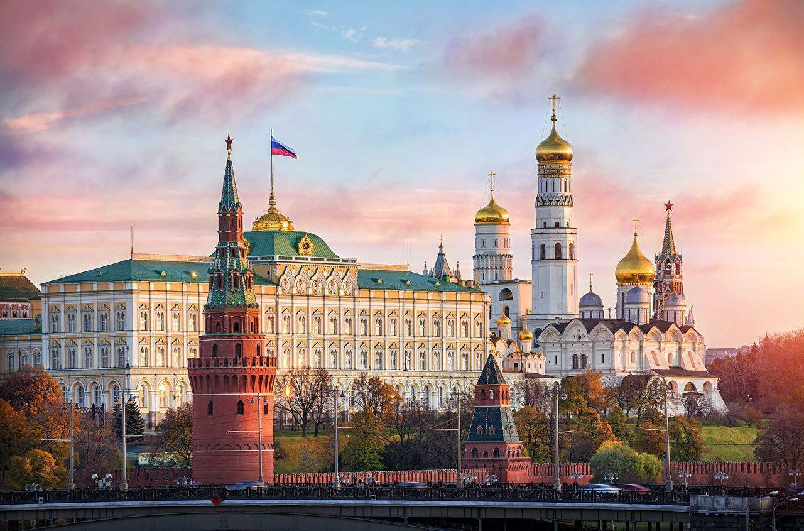
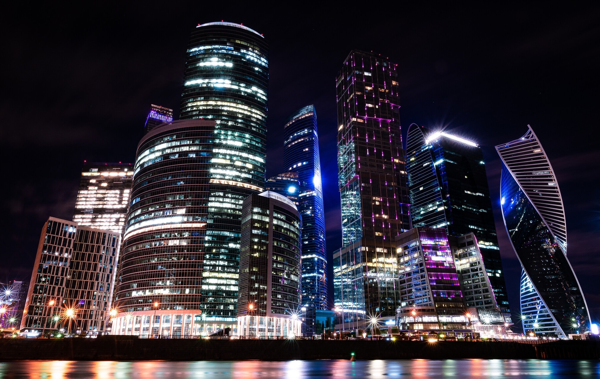

Москва
Москва, пожалуй, один из городов, не нуждающихся в представлении. В Москве множество парков и театров, старинных соборов и усадеб, а собрания музеев соперничают с мировыми хранилищами. Москва сегодня — крупнейший по численности населения город Европы с населением более 12 млн человек, крупнейший русскоязычный город в мире и лучший мегаполис мира по качеству жизни и развитию инфраструктуры.

Красная площадь – основной символ и наиболее известное историческое место Москвы. Сама площадь и расположенные на ней архитектурные сооружения внесены в список объектов Всемирного наследия ЮНЕСКО. Это историческое место, обязательное для посещения иностранцами. Москвичи также считают Красную площадь "сердцем столицы" и с удовольствием встречают здесь Новый год, приходят на парад 9 Мая или вальяжно прогуливаются по брусчатке в солнечные выходные.
Современное здание воспроизводит внешний облик одноименного храма, возведенного в честь подвига российского народа в Отечественной войне 1812 года, освященного в 1883 году и разрушенного в 1931 году. Идея постройки храма возникла зимой 1812 года на одном из заседаний под председательством Гавриила Державина. Предложение было передано царю Александру I, и уже через несколько дней, в Рождество 1812-го, появился манифест за подписью государя о строительстве храма

Государственная Третьяковская галерея — один из крупнейших художественных музеев мира. Московский купец Павел Третьяков в 1851 году купил здание в Лаврушинском переулке, в через пять лет основал в нем музей русской художественной школы. Первыми работами в коллекции стали «Искушение» Николая Шильдера и «Стычка с финляндскими контрабандистами» Василия Худякова.
Москва-Сити — это Москва будущего, строящийся международный деловой квартал из ультрасовременных небоскрёбов. Уникальная для России и Восточной Европы зона деловой активности объединяет в себе апартаменты для жилья, офисные здания, многочисленные площадки для торговли и отдыха. Москвичей и гостей города Москва-Сити привлекает необычной конфигурацией сооружений, развитой социально-культурной инфраструктурой.
